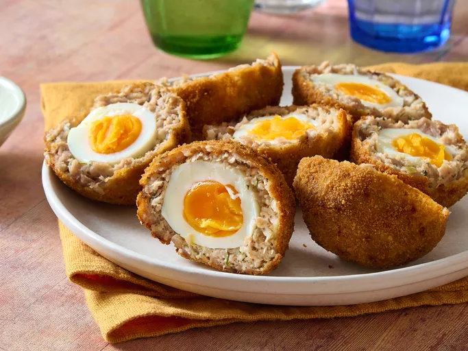

Scotch Eggs

Description
Scotch eggs are a classic British dish consisting of a hard or soft-boiled egg wrapped in sausage meat, coated in breadcrumbs, and deep-fried or baked. They are often served as a snack or picnic food.
Ingredients
- 4 large eggs
- 1 pound (450g) sausage meat
- 1 cup breadcrumbs
- 1/2 cup all-purpose flour
- 1 teaspoon salt
- 1/2 teaspoon black pepper
- 1 teaspoon dried herbs (optional)
- Oil for frying (if deep-frying)
Steps
- Boil the eggs in water for about 6-8 minutes for soft-boiled or 10-12 minutes for hard-boiled. Cool them in ice water and peel.
- In a bowl, mix the sausage meat with salt, pepper, and herbs (if using).
- Divide the sausage meat into four equal portions. Flatten each portion into a patty.
- Wrap each boiled egg with a sausage patty, ensuring it is completely covered.
- Dredge each wrapped egg in flour, then dip in beaten egg, and finally coat with breadcrumbs.
- Heat oil in a deep pan or fryer to 350°F (175°C). Fry the eggs until golden brown, about 5-7 minutes. Alternatively, bake at 400°F (200°C) for about 25-30 minutes.
- Drain on paper towels and let cool slightly before serving.
Home